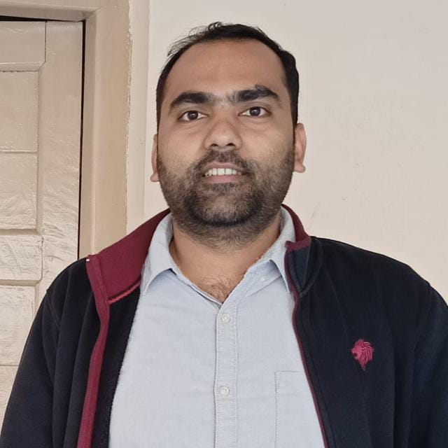

Ashis Kundu
Postdoctoral Researcher · TEOFY, IFM, Linköping University
About
I work in computational materials science, studying thermal transport, thermoelectrics, magnetism, and materials under high pressure, with a focus on energy and quantum materials.
Research interests
- Thermal and thermoelectric transport in bulk and 2D materials
- Machine-learning force fields for atomistic simulations
- Magnetism in alloys
- Electronic structure of materials under high pressure
Publications
A full, up-to-date list is on Google Scholar.
Contact
ashis.kundu@liu.se
Department of Physics, Chemistry and Biology (IFM), Linköping University, Sweden